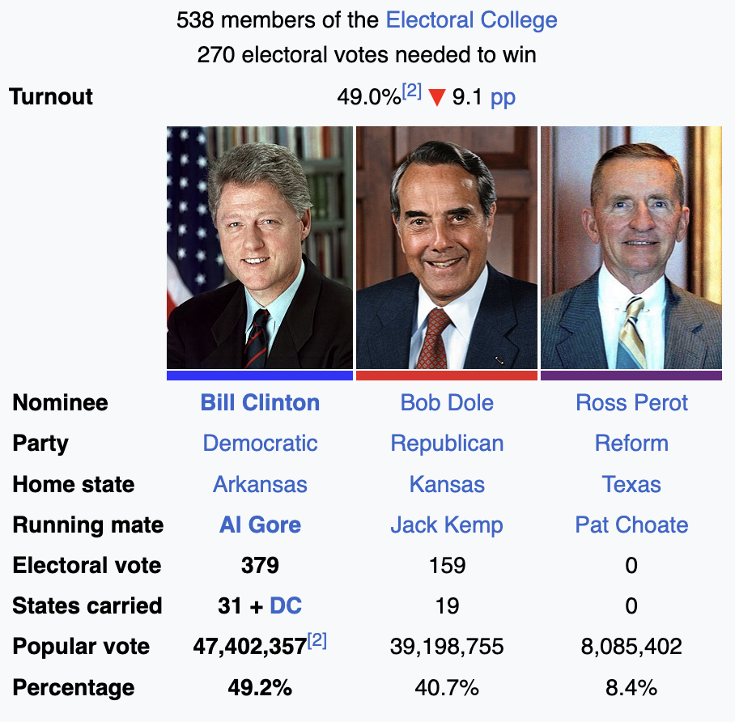

'data.frame': 944 obs. of 10 variables:
$ popul : int 0 190 31 83 640 110 100 31 180 2800 ...
$ TVnews: int 7 1 7 4 7 3 7 1 7 0 ...
$ selfLR: Ord.factor w/ 7 levels "extLib"<"Lib"<..: 7 3 2 3 5 3 5 5 4 3 ...
$ ClinLR: Ord.factor w/ 7 levels "extLib"<"Lib"<..: 1 3 2 4 6 4 6 4 6 3 ...
$ DoleLR: Ord.factor w/ 7 levels "extLib"<"Lib"<..: 6 5 6 5 4 6 4 5 3 7 ...
$ PID : Ord.factor w/ 7 levels "strDem"<"weakDem"<..: 7 2 2 2 1 2 2 5 4 1 ...
$ age : int 36 20 24 28 68 21 77 21 31 39 ...
$ educ : Ord.factor w/ 7 levels "MS"<"HSdrop"<..: 3 4 6 6 6 4 4 4 4 3 ...
$ income: Ord.factor w/ 24 levels "$3Kminus"<"$3K-$5K"<..: 1 1 1 1 1 1 1 1 1 1 ...
$ vote : Factor w/ 2 levels "Clinton","Dole": 2 1 1 1 1 1 1 1 1 1 ...Regression for Multinomial and Ordinal Outcomes
Brandon M. Greenwell, PhD
University of Cincinnati
Regression for Multinomial Outcomes
Multinomial data
The multinomial distribution is an extension of the binomial where the outcome can take on more than two values
The categories can be nominal (e.g., have no natural ordering) or ordinal in nature (e.g., low < medium < high)
We’ll start with the case of a nominal outcome having more than two categories
Let \(Y\) be a discrete r.v. that can take on one of \(J\) categories with \(\left\{\mathrm{P}\left(Y = j\right) = p_j\right\}_{j=1}^J\), where \(\sum_{j=1}^Jp_j=1\)
Multinomial logit model
Similar to binary regression, we need a way to link the probabilities \(p_j\) to the predictors \(\boldsymbol{x} = \left(x_1, x_2, \dots, x_p\right)^\top\)
Need to ensure each \(0 \le p_j \le 1\) and that \(\sum_{j=1}^Jp_j = 1\)
Idea is similar to fitting several logistic regressions using one of the categories as the reference or baseline (say, \(j = 1\))
To that end, we define the \(J-1\) logits \(\eta_j = \boldsymbol{x}^\top\boldsymbol{\beta}_j = \log\left(p_j / p_1\right)\), where \(j \ne 1\)
Notice we have a set of coefficients for each comparison!
Multinomial logit model
To ensure \(\sum_{j=1}^Jp_j = 1\), we have \[ p_i = \frac{\exp\left(\eta_i\right)}{1 + \sum_{j=2}^J\exp\left(\eta_j\right)} \]
This implies that \(p_1 = 1 - \sum_{j=2}^Jp_j\)
1996 National Election Study
1996 National Election Study
We’ll consider a sample taken from a subset of the 1996 American National Election Study
Contained in the
nes96data frame in the faraway 📦
1996 National Election Study
For simplicity, we’ll consider three variables: age, education level, and income groups of each respondent
Some of the factors are “ordered” by default; E.g.,
income(respondent’s education level):
[1] "$3Kminus" "$3K-$5K" "$5K-$7K" "$7K-$9K" "$9K-$10K"
[6] "$10K-$11K" "$11K-$12K" "$12K-$13K" "$13K-$14K" "$14K-$15K"
[11] "$15K-$17K" "$17K-$20K" "$20K-$22K" "$22K-$25K" "$25K-$30K"
[16] "$30K-$35K" "$35K-$40K" "$40K-$45K" "$45K-$50K" "$50K-$60K"
[21] "$60K-$75K" "$75K-$90K" "$90K-$105K" "$105Kplus" - Same goes for
PIDandeduc(respondent’s party identification and education, respectively)
1996 National Election Study
Here’s a cleaned up version of the data we’ll work with:
Show R code
# Condense party identification (PID) column into three categories
party <- nes96$PID
levels(party) <- c(
"Democrat", "Democrat",
"Independent", "Independent", "Independent",
"Republican", "Republican"
)
# Convert income to numeric
inca <- c(1.5, 4, 6, 8, 9.5, 10.5, 11.5, 12.5, 13.5, 14.5, 16, 18.5, 21, 23.5,
27.5, 32.5, 37.5, 42.5, 47.5, 55, 67.5, 82.5, 97.5, 115)
income <- inca[unclass(nes96$income)]
# Construct new data set for analysis
rnes96 <- data.frame(
"party" = party,
"income" = income,
"education" = nes96$educ,
"age" = nes96$age
)
# Print summary of data set
summary(rnes96) party income education age
Democrat :380 Min. : 1.50 MS : 13 Min. :19.00
Independent:239 1st Qu.: 23.50 HSdrop: 52 1st Qu.:34.00
Republican :325 Median : 37.50 HS :248 Median :44.00
Mean : 46.58 Coll :187 Mean :47.04
3rd Qu.: 67.50 CCdeg : 90 3rd Qu.:58.00
Max. :115.00 BAdeg :227 Max. :91.00
MAdeg :127 1996 National Election Study
Let’s continue with some visual exploration:
Show R code
library(dplyr)
library(ggplot2)
theme_set(theme_bw())
# Aggregate data; what's happening here?
egp <- group_by(rnes96, education, party) %>%
summarise(count = n()) %>%
group_by(education) %>%
mutate(etotal = sum(count), proportion = count/etotal)
# Plot results
ggplot(egp, aes(x = education, y = proportion, group = party,
linetype = party, color = party)) +
geom_line(size = 2)1996 National Election Study
Let’s continue with some visual exploration:
Show R code
# Aggregate data; what's happening here?
igp <- mutate(rnes96, income_group = cut_number(income, 7)) %>%
group_by(income_group, party) %>%
summarise(count = n()) %>%
group_by(income_group) %>%
mutate(etotal = sum(count), proportion = count / etotal)
# Plot results
ggplot(igp, aes(x = income_group, y = proportion, group = party,
linetype = party, color = party)) +
scale_x_discrete(guide = guide_axis(angle = 45)) +
geom_line(size = 2)1996 National Election Study
Let’s continue with some visual exploration:
Show R code
# Aggregate data; what's happening here?
agp <- rnes96 %>%
group_by(age, party) %>%
summarise(count = n()) %>%
group_by(age) %>%
mutate(etotal = sum(count), proportion = count / etotal)
# Plot results
ggplot(agp, aes(x = age, y = proportion, group = party,
linetype = party, color = party)) +
geom_line(size = 1, alpha = 0.5)1996 National Election Study
Define the following probabilities:
- \(p_{d} = P\left(\text{voting democrat}\right)\);
- \(p_{i} = P\left(\text{voting independent}\right)\);
- \(p_{r} = P\left(\text{voting republican}\right)\),
where \(p_d + p_i + p_r = 1\). Assume for now that income is the only independent variable of interest.
1996 National Election Study
The multinomial logit model effectively fits several logits (one for every class except the baseline, which is arbitrary; here, it’s democrat):
- \(\log\left(p_{i} / p_{d}\right) = \beta_0 + \beta_1 \mathtt{income}\quad\) (log odds of voting independent vs. democrat);
- \(\log\left(p_{r} / p_{d}\right) = \alpha_0 + \alpha_1 \mathtt{income}\quad\) (log odds of voting republican vs. democrat).
Here we use \(\beta_i\) and \(\alpha_i\) to remind us that the estimated coefficients between the two logits will be different.
1996 National Election Study
Multinomial logit model using all three predictors:
Show R code
Call:
multinom(formula = party ~ age + education + income, data = rnes96,
trace = FALSE)
Coefficients:
(Intercept) age education.L education.Q education.C
Independent -1.197260 0.0001534525 0.06351451 -0.1217038 0.1119542
Republican -1.642656 0.0081943691 1.19413345 -1.2292869 0.1544575
education^4 education^5 education^6 income
Independent -0.07657336 0.1360851 0.15427826 0.01623911
Republican -0.02827297 -0.1221176 -0.03741389 0.01724679
Residual Deviance: 1968.333
AIC: 2004.333 Brief digression…
By default, R encodes ordered factors using orthogonal polynomials
Ames Housing example:
1996 National Election Study
No \(p\)-values here!
Call:
multinom(formula = party ~ age + education + income, data = rnes96,
trace = FALSE)
Coefficients:
(Intercept) age education.L education.Q education.C
Independent -1.197260 0.0001534525 0.06351451 -0.1217038 0.1119542
Republican -1.642656 0.0081943691 1.19413345 -1.2292869 0.1544575
education^4 education^5 education^6 income
Independent -0.07657336 0.1360851 0.15427826 0.01623911
Republican -0.02827297 -0.1221176 -0.03741389 0.01724679
Std. Errors:
(Intercept) age education.L education.Q education.C
Independent 0.3265951 0.005374592 0.4571884 0.4142859 0.3498491
Republican 0.3312877 0.004902668 0.6502670 0.6041924 0.4866432
education^4 education^5 education^6 income
Independent 0.2883031 0.2494706 0.2171578 0.003108585
Republican 0.3605620 0.2696036 0.2031859 0.002881745
Residual Deviance: 1968.333
AIC: 2004.333 1996 National Election Study
How do we interpret the coefficients? How about for
income?All else held constant, for every ⚠️one-unit increase in income⚠️, the multinomial log odds of voting republican, relative to democrat increase by 0.017.
Gross… 🤢
Effect plots to the rescue!
1996 National Election Study
Look at predicted probabilities:
Democrat Independent Republican
1 0.5923052 0.1975326 0.2101622
2 0.5919378 0.1687055 0.2393567
3 0.5970789 0.1732058 0.2297154
4 0.5924809 0.1719775 0.2355417
5 0.5423563 0.1583973 0.2992464
6 0.5907590 0.1683954 0.24084561 2 3 4 5 6
1 1 1 1 1 1 1996 National Election Study
Show R code
library(pdp) # for partial dependence (PD) plots
# Compute partial dependence of party identification on income
pfun <- function(object, newdata) {
probs <- predict(object, newdata = newdata, type = "probs")
colMeans(probs) # return average probability for each class
}
pd.inc <- partial(mfit, pred.var = "income", pred.fun = pfun)
ggplot(pd.inc, aes(x = income, y = yhat, linetype = yhat.id, color = yhat.id)) +
geom_line(size = 2) +
xlab("Income group midpoint (in thousands)") +
ylab("Partial dependence")
1996 National Election Study
Can perform classification, if desired…🙄
Actual
Predicted Democrat Independent Republican
Democrat 277 130 169
Independent 4 7 5
Republican 99 102 151Ummm…majority of actual Republicans are classified as Democrats?!
1996 National Election Study
For kicks, try stepwise selection; since the model is based on a (multinomial) likelihood, the AIC/BIC are well-defined and the usual stepwise procedures are still valid:
Start: AIC=2004.33
party ~ age + education + income
Df AIC
- education 12 1996.5
- age 2 2003.6
<none> 2004.3
+ age:income 2 2006.7
+ age:education 12 2009.3
+ education:income 12 2013.2
- income 2 2045.9
Step: AIC=1996.54
party ~ age + income
Df AIC
- age 2 1993.4
<none> 1996.5
+ age:income 2 1998.8
+ education 12 2004.3
- income 2 2048.8
Step: AIC=1993.42
party ~ income
Df AIC
<none> 1993.4
+ age 2 1996.5
+ education 12 2003.6
- income 2 2045.3Call:
multinom(formula = party ~ income, data = rnes96, trace = FALSE)
Coefficients:
(Intercept) income
Independent -1.1749331 0.01608683
Republican -0.9503591 0.01766457
Residual Deviance: 1985.424
AIC: 1993.424 1996 National Election Study
For comparison, fit a (default) random forest:
Show R code
Call:
randomForest(formula = party ~ ., data = rnes96, ntree = 1000)
Type of random forest: classification
Number of trees: 1000
No. of variables tried at each split: 1
OOB estimate of error rate: 55.72%
Confusion matrix:
Democrat Independent Republican class.error
Democrat 248 41 91 0.3473684
Independent 129 27 83 0.8870293
Republican 156 26 143 0.56000001996 National Election Study
Random forest results for comparison:
Show R code
# Construct the same PD plot as before, but using the RF model
pd <- partial(rfo, pred.var = "income", pred.fun = function(object, newdata) {
colMeans(predict(object, newdata = newdata, type = "prob"))
})
ggplot(pd, aes(x = income, y = yhat, linetype = yhat.id, color = yhat.id)) +
geom_line(size = 2) +
xlab("Income (midpoint in thousands)") +
ylab("Partial dependence") +
geom_rug(data = data.frame("income" = quantile(rnes96$income, prob = 1:9/10)), aes(x = income), inherit.aes = FALSE)Regression for Ordinal Outcomes
Ordinal outcomes
Technically, party identification (
party) is ordinal variable:Democrat<Independent<RepublicanWith an ordered response (e.g., Likert scale), it’s often easier to work with the cumulative probabilities \(p_j^\le = \mathrm{P}\left(Y \le j\right)\)
Note that if the \(J\) response categories have order \(1 < 2 < \cdots < J\), then \(p_J^\le = \mathrm{P}\left(Y \le J\right) = 1\)
Suppose \(Z\) is some unobserved (i.e., latent) response but we only observe a discretized version of the form \(Y = j\) if \(\alpha_{j-1} < Z < \alpha_j\)
Ordinal outcomes
If \(Z - \boldsymbol{x}^\top\boldsymbol{\beta}\) has distribution \(F\), then \[ \mathrm{P}\left(Y \le j\right) = \mathrm{P}\left(Z \le \alpha_j\right) = F\left(\alpha_j - \boldsymbol{x}^\top\boldsymbol{\beta}\right) \]
If, for example, \(F\) is a standard logistic distribution, then \[ p_j^\le = \frac{\exp\left(\alpha_j - \boldsymbol{x}^\top\boldsymbol{\beta}\right)}{1 + \exp\left(\alpha_j - \boldsymbol{x}^\top\boldsymbol{\beta}\right)} \] which is a logit model for the cumulative probabilities!
Choosing a standard normal distribution for \(F\) would lead to a probit model for the cumulative probabilities, and so on…
Proportional odds (PO) model
Let \(p_j^\top = \mathrm{P}\left(Y \le j|\boldsymbol{x}\right)\)
The standard PO model, which uses a logit link, is \[ \log\left(\frac{p_j^\le}{1-p_j^\le}\right) = \alpha_j - \boldsymbol{x}^\top\boldsymbol{\beta}, \quad j = 1, 2, \dots, J-1 \]
Proportional odds (PO) model
- PO assumption, etc…
1996 National Election Study
The simplest implementation is polr() from MASS
Call:
polr(formula = party ~ age + education + income, data = rnes96)
Coefficients:
age education.L education.Q education.C education^4 education^5
0.005774902 0.724086814 -0.781360508 0.040168238 -0.019925492 -0.079412657
education^6 income
-0.061103738 0.012738693
Intercepts:
Democrat|Independent Independent|Republican
0.6448794 1.7373541
Residual Deviance: 1984.211
AIC: 2004.211 1996 National Election Study
Similar to before, we can use AIC-based stepwise procedures:
Start: AIC=2004.21
party ~ age + education + income
Df AIC
- education 6 2002.8
<none> 2004.2
- age 1 2004.4
- income 1 2038.6
Step: AIC=2002.83
party ~ age + income
Df AIC
- age 1 2001.4
<none> 2002.8
+ education 6 2004.2
- income 1 2047.2
Step: AIC=2001.36
party ~ income
Df AIC
<none> 2001.4
+ age 1 2002.8
+ education 6 2004.4
- income 1 2045.3Call:
polr(formula = party ~ income, data = rnes96)
Coefficients:
income
0.01311984
Intercepts:
Democrat|Independent Independent|Republican
0.2091045 1.2915566
Residual Deviance: 1995.363
AIC: 2001.363 1996 National Election Study
1996 National Election Study
Compare full and reduced model using LR test
1996 National Election Study
Interpreting the coefficients:
Call:
polr(formula = party ~ income, data = rnes96)
Coefficients:
Value Std. Error t value
income 0.01312 0.001971 6.657
Intercepts:
Value Std. Error t value
Democrat|Independent 0.2091 0.1123 1.8627
Independent|Republican 1.2916 0.1201 10.7526
Residual Deviance: 1995.363
AIC: 2001.363 We can say that the odds of moving from Democrat to Independent/Republican (or from Democrat/Independent to Republican) increase by a factor of \(\exp\left(0.013120\right) = 1.0132\) per unit increase in income.
Non-proportional odds (NPO) model
We can generalize the PO model by allowing the coefficients to vary between categories (similar to the mulinomial logit model form earlier): \[ \log\left(\frac{p_j^\le}{1-p_j^\le}\right) = \alpha_j - \boldsymbol{x}^\top\boldsymbol{\beta}_j, \quad j = 1, 2, \dots, J-1 \]
This relaxes the PO assumptions but requires more complicated software (e.g., the VGAM package)
Careful, different packages use different default parameterizations; E.g., see Table 2 here
1996 National Election Study
PO and NPO fits to election data using VGAM:
Show R code
Call:
vglm(formula = party ~ income, family = cumulative(parallel = TRUE,
reverse = TRUE), data = rnes96)
Coefficients:
(Intercept):1 (Intercept):2 income
-0.20910243 -1.29155469 0.01311978
Degrees of Freedom: 1888 Total; 1885 Residual
Residual deviance: 1995.363
Log-likelihood: -997.6813 Show R code
Call:
vglm(formula = party ~ income, family = cumulative(parallel = FALSE,
reverse = TRUE), data = rnes96)
Coefficients:
(Intercept):1 (Intercept):2 income:1 income:2
-0.32886794 -1.14826963 0.01618611 0.01048588
Degrees of Freedom: 1888 Total; 1884 Residual
Residual deviance: 1987.539
Log-likelihood: -993.7693 Assigning scores
When the ordinal response has a larger number of categories, it may be reasonable to assign scores (i.e., integers) to each level and then model these scores using a standard linear model
Rule of thumb from my old advisor was 10 or more categories
Questions?

BANA 7042: Statistical Modeling